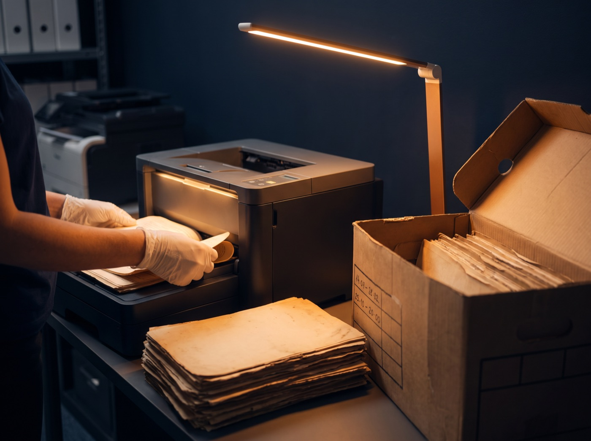
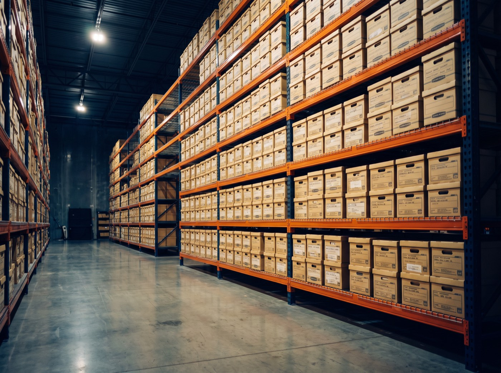

Prefeituras e órgãos públicos
Arquivo morto digitalizado, indexado e integrado ao sistema de gestão que a prefeitura já usa.
Gestão documental · Concórdia — SC
Digitalizamos, organizamos e guardamos o acervo da sua empresa ou órgão público — do primeiro scan ao descarte seguro, nos termos do Decreto nº 10.278/2020.
Do arquivo morto ao acervo digital, com validade jurídica
01 — Por que existimos
A Zyon Tech transforma acervos físicos e digitais em sistemas seguros e acessíveis — menos papel, menos burocracia, mais conformidade. Para empresas de todos os portes e para o setor público.
02 — Para quem
Arquivo morto digitalizado, indexado e integrado ao sistema de gestão que a prefeitura já usa.
Prontuários com prazos legais longos, acesso rápido e sigilo absoluto.
Processos e livros fiscais localizáveis em segundos, não em tardes.
Projetos, ARTs e documentos técnicos protegidos contra perda e deterioração.
Contratos com trilha de auditoria, integridade e controle de acesso.
Históricos e atas preservados por décadas, acessíveis em um clique.
03 — Soluções
A
Escaneamento profissional com OCR para buscas inteligentes. Cada página nasce de novo em PDF/A, com metadados e assinatura ICP-Brasil — o arquivo digital vale o mesmo que o papel.

B
Alguns documentos precisam existir em papel por décadas. Guardamos o seu acervo em mais de 1.000 m² de estrutura controlada — e entregamos qualquer caixa quando você precisar.

C
Todo o acervo digital organizado, pesquisável e disponível 24/7 — com controle de versões, histórico e integração aos sistemas que você já usa.
Órgãos públicos
A Zyon é credenciada pela IPM no Paraná, em Santa Catarina e no Rio Grande do Sul para digitalizar e parametrizar documentos no Atende.Net, o principal sistema de gestão pública municipal.
Empresas e órgãos
Sistema robusto e intuitivo para digitalizar, organizar e acessar documentos empresariais — integração corporativa, versões e acesso remoto seguro.
04 — O processo completo
ETAPA 01 DE 06
Retiramos e preparamos o acervo, caixa por caixa, com transporte seguro e cadeia de custódia.
Escaneamento profissional em alta qualidade. Cada página vira PDF/A pesquisável, nos termos do Decreto 10.278/2020.
Metadados e categorias que transformam pilhas em respostas: qualquer documento em segundos.
Guarda física em +1.000 m² monitorados, digital no GED com acesso 24/7 — ou os dois.
Cada série documental cumpre sua tabela de temporalidade: nem um dia a menos do que a lei exige.
Eliminação certificada do que já cumpriu seu prazo. O que tem valor histórico, permanece.
05 — Amparo legal
Gestão documental não é organização — é obrigação legal. Cada etapa do nosso processo responde a uma norma específica.
8.159/1991
Define a política nacional de arquivos públicos e privados e estabelece que a gestão documental é dever do poder público — produção, tramitação, uso, avaliação e arquivamento.
Na prática: prefeituras e órgãos são legalmente obrigados a gerir e proteger seus arquivos.
12.682/2012
Regula a digitalização e o armazenamento em meio eletrônico. Com integridade verificada por certificação ICP-Brasil, o original em papel pode ser descartado — exceto documentos de valor histórico.
Na prática: é o que autoriza a sua empresa a se livrar do arquivo morto.
10.278/2020
Estabelece os requisitos técnicos para que o documento digitalizado tenha os mesmos efeitos legais do original: PDF/A, metadados obrigatórios, integridade e autenticidade.
Na prática: nosso processo de digitalização segue cada requisito — o digital vale como prova.
13.709/2018
Documentos carregam dados pessoais. A lei exige controle de acesso, rastreabilidade e descarte seguro — em papel ou em pixel.
Na prática: guarda monitorada, acesso restrito e eliminação certificada protegem você de sanções.
Complementadas pelas resoluções do CONARQ (Conselho Nacional de Arquivos) e pelas tabelas de temporalidade, que definem quanto tempo cada série documental deve ser guardada — e quando pode, enfim, ser eliminada.
0 m²
de guarda física monitorada
24/7
acesso remoto ao GED
0
decreto cumprido à risca
PR·SC·RS
credenciada IPM nos três estados
06 — Prova
"Com a guarda documental realizada de forma segura, conseguimos liberar um espaço físico valioso, que agora pode ser melhor aproveitado para atender à população. A organização do acervo trouxe mais agilidade e transparência ao nosso trabalho."
"A Zyon cuidou de tudo com extrema competência, do transporte seguro dos documentos até a digitalização e integração com o Atende.Net. O resultado foi tão positivo que agora vamos digitalizar todo o acervo da prefeitura."
07 — Por dentro
08 — Próximo passo
(49) 3442-3503
zyon@zyontecnologia.com.brR. Marcelino Ramos, 58 · Imperial
Concórdia — SC · ver no mapa